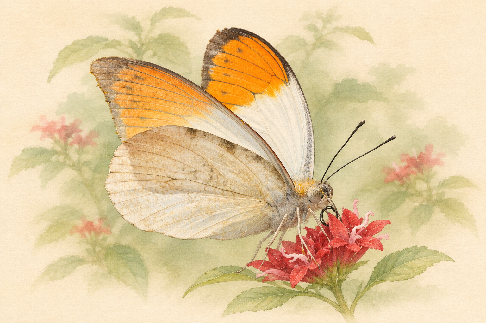

画像・出典と編集方針
指定された165項目を保持し、学名や和名の異同は各記事に補足しました。記録地点と現在の定着、一般生態と沖縄での確認を区別しています。未確認の情報は推測で埋めていません。
写真とイラストの位置づけ
5科それぞれの代表種の写真を参考にしたAIイラストを掲載しています。165項目すべての個別イラストではありません。画像中に文字を入れず、両言語で共用しています。参考写真の撮影地・亜種は沖縄の分布証拠として使用していません。生成画像の細部を厳密な種同定の根拠にしないでください。
Papilio xuthus

Papilio xuthus 1024px.jpg


Hebomoia glaucippe

File:Hebomoia glaucippe qtl2.jpg


Zizeeria maha


File:Pale Grass Blue October 2007.jpg

Idea leuconoe

File:Idea leuconoe qtl1.jpg


Choaspes benjaminii

File:Choaspes benjaminii.jpg


編集方針と出典
島別の記録は主に沖縄蝶類生態図鑑を参照し、形態・雌雄差・大きさは種別図鑑や研究資料で補足しました。各記事に出典リンク、保存データに出典一覧を収録しています。ベンガル語名は説明用表記で、確かな一般名がない場合は学名を表示しています。ベンガル語は専門家による母語校閲を経ていません。
学名には資料間の違いや改訂があります。マダラチョウ類・ジャノメチョウ類・テングチョウ類はタテハチョウ科として保存し、見やすさのために表示グループを分けました。